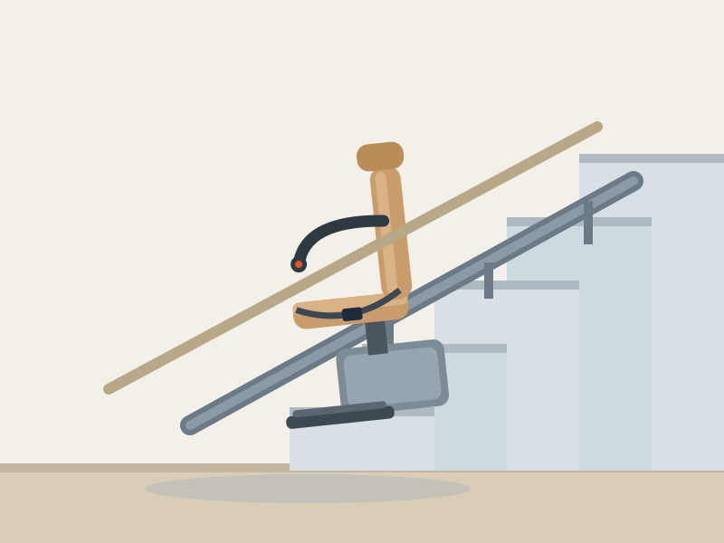

AmeriGlide Rave 2 Stair Lift — available from AmeriGlide. Illustration by HomeEnabled, based on the manufacturer's current model.
For most of the families we work with, the staircase is the first place where a home starts to feel like it's working against them. Knees ache, balance gets less certain, and suddenly the upstairs bedroom — the one with forty years of memories in it — feels a flight too far. Moving the bedroom downstairs is a compromise. Moving out of the house entirely is a heartbreak. A well-fitted stair lift is very often the better answer, and the AmeriGlide Rave 2 is the lift we recommend more than any other.
The Rave 2 is AmeriGlide's flagship straight stair lift, and it earns its best-seller status the honest way: a tough all-metal drive case, a smooth helical-gear ride, and a folded footprint of just over 11 inches so the rest of the household barely notices it's there. The track mounts to the stair treads themselves — not the wall — which keeps installation simple and avoids structural surprises.
The HomeEnabled Verdict: The Rave 2 is the rare product that is both the budget pick and the quality pick. For straight staircases, it's the first lift we recommend — and the one our readers report the fewest problems with.
Why It Made Our List
We scored more than a dozen straight stair lifts on safety, ride quality, footprint, ease of installation and total cost of ownership. The Rave 2 finished at or near the top in every category. It plugs into any standard 120V household outlet, and its battery backup means a storm-related outage will never leave you stranded mid-staircase.
Just as important for many of our readers: the Rave 2 is one of the few quality lifts that a capable family member or local handyman can install in an afternoon using the included instructions, which can save $1,000 or more in professional installation fees.
Key Features
- 350 lb weight capacity — a higher rating than most competing straight lifts, accommodating a wide range of riders safely.
- Ultra-compact folded profile — the seat, armrests and footrest all fold flat to roughly 11 inches, leaving the staircase clear for other family members.
- Battery backup with trickle charger — keeps the lift running through power outages and charges automatically at either end of the track.
- Tread-mounted track — installs onto the steps rather than the wall, so there's no drilling into drywall or studs.
- Swivel seat with seatbelt — rotates at the top landing so you exit onto solid floor, never over the staircase.
- Safety sensors — the carriage stops automatically if it meets an obstruction anywhere on the track.
Specifications at a Glance
| Weight capacity | 350 lb |
|---|---|
| Track length (standard) | Fits staircases up to 16 ft; longer track available |
| Folded depth | ≈ 11.25 inches |
| Power | 120V household outlet with battery backup |
| Drive system | Helical gear, all-metal drive case |
| Seat | Padded vinyl with seatbelt and swivel |
| Installation | DIY-friendly or professional |
| Warranty | Limited manufacturer warranty (lifetime on drive train components) |
Pros & Cons
What We Love
- Outstanding value — frequently $1,500+ less than dealer-installed brands
- 350 lb capacity covers most riders without an upgrade fee
- Folds to barely 11 inches; stairs stay usable for everyone
- Battery backup rides through power outages
- DIY installation is genuinely achievable
Worth Considering
- Straight staircases only — curved stairs need a custom lift
- Standard seat upholstery is functional rather than plush
- Outdoor version must be purchased separately
Who It's For
The Rave 2 is built for the homeowner who wants a dependable daily ride between floors without a five-figure project. If your staircase is straight — even a steep one — and you or a loved one is starting to dread the climb, this is the lift we'd put in our own parents' home.
If your staircase turns, has an intermediate landing, or wraps a curve, look instead at a custom curved lift, or pair two straight Rave 2 units with a landing transfer where appropriate.
Price & Where to Buy
At a typical sale price around $2,199, the Rave 2 undercuts comparable dealer-installed lifts by a wide margin — national brands routinely quote $3,500–$5,500 installed for the same staircase. Add self-installation and the savings often pay for years of electricity and maintenance.
AmeriGlide Rave 2 Stair Lift
🔄 Price tracked automatically · last verified June 3, 2026. Sale pricing and availability may change at any time.
Frequently Asked Questions
Can the Rave 2 be installed on any staircase?
It fits straight staircases up to roughly 16 feet with the standard track; extended tracks are available for longer runs. Curved or switchback staircases require a custom curved lift instead.
Does it still work if the power goes out?
Yes. The battery backup automatically takes over during an outage, and the batteries recharge from a standard outlet whenever the carriage is parked at a charge point.
Do I need a professional installer?
No. Because the track anchors to the stair treads, many buyers self-install in 3–5 hours with basic tools. Professional installation is available if you'd rather not.
The Bottom Line
The Rave 2 is the rare product that is both the budget pick and the quality pick. For straight staircases, it's the first lift we recommend — and the one our readers report the fewest problems with. As always: measure twice, talk with the rider, and when in doubt, ask an occupational therapist to look at your specific home. If you have questions this review didn't answer, write to us — we read everything.